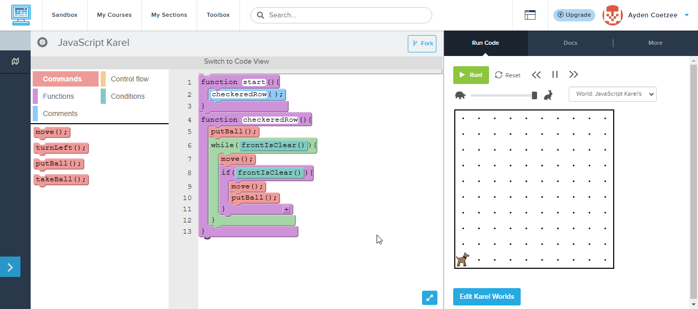

Grade 8 Karel Assessment
Test your code in the sandbox, then copy it back to submit
Click me for help!

Student Infromation
Questions
Question 1. Make a Square (5 marks)
Start World:

End World:

Task:
- Create a 4x4 square of tennis balls (That means each side has 4 tennis )
- Use a for loop to place the balls
- Start at bottom-left facing East
- End facing East after completing square
Tips:
- Use a for loop to repeat 4 times
- After placing each ball, turn left and move
- Remember to place ball at each corner
Question 2. X Marks the Spot (7 marks)
Start World:

End World:

Task:
- Create X pattern
- Start at bottom-left corner
- Use functions to draw each diagonal
- End at start position facing East
Tips:
- Create drawDiagonal() function
- Move diagonally using turnLeft() and turnRight()
- Use putBall() at each step
Question 3. Blackout (8 marks)
Start World:

End World:

Task:
- Fill every square with a tennis ball
- Works on any world size bigger than 1
- Use functions to organize code
- Use efficient looping strategy
Tips:
- Create fillRow() function
- Use while loops to handle variable world size
- Check leftIsClear() to know when to move up